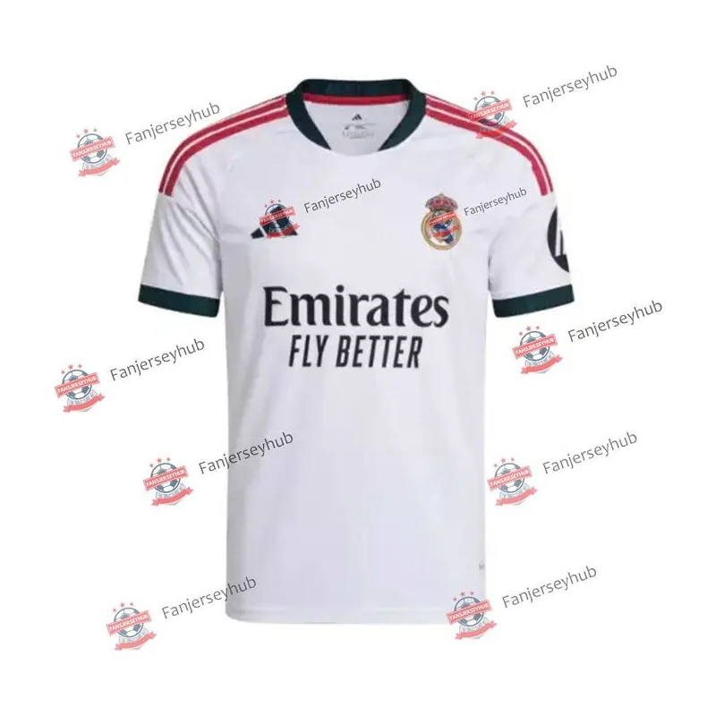

MAILLOT DE FOOTBALL
Real Madrid
Domicile 2026/27
Vous recherchez la tenue domicile du Real Madrid pour la saison 2026/27 ? Cette fiche rassemble le modèle référencé dans la sélection KeeperLab, son visuel et les tailles indiquées au catalogue. Pour comparer les autres tenues du club, le filtre Real Madrid de la page maillots permet également de retrouver les versions extérieur et third.
Lien affilié · ouverture dans un nouvel onglet. Prix et disponibilité à confirmer chez le vendeur.
Informations du modèle
- Club
- Real Madrid
- Saison et tenue
- 2026/27 · Domicile
- Tailles indiquées au catalogue
- S · M · L · XL · 2XL · 3XL · 4XL. À confirmer auprès de la boutique.
- Boutique référencée
- FansJerseyHub
LES DÉTAILS À COMPARER
Coupe, matière et finitions
- Coupe et aisance
- Comparez la largeur de poitrine et la longueur à un maillot que vous portez déjà, mesuré à plat selon la méthode du vendeur. Prévoyez l’aisance nécessaire si vous le portez sur une première couche. Une même lettre de taille ne garantit pas les mêmes dimensions d’une collection à l’autre.
- Version du maillot
- Les mentions « joueur », « supporter » ou « replica » peuvent désigner des coupes et des finitions différentes selon la marque et le vendeur. Vérifiez la référence exacte et les photos de la version proposée : le club et la saison ne suffisent pas à l’identifier.
- Composition et ventilation
- Recherchez les pourcentages de fibres et les éventuelles zones de ventilation dans la description du marchand. La composition détaillée et la technologie textile de ce modèle ne sont pas renseignées ici ; aucune propriété d’évacuation de la transpiration n’est donc attribuée.
- Écusson et personnalisation
- Contrôlez les gros plans des logos, de l’écusson et du sponsor. Si vous ajoutez un nom, un numéro ou des badges, vérifiez leur emplacement, le supplément demandé et les conditions de retour applicables à la personnalisation.
APRÈS RÉCEPTION
Contrôle et entretien du maillot
Avant de retirer les étiquettes ou de laver le maillot, comparez la taille reçue, la référence et les finitions à votre commande. Essayez-le pour contrôler l’aisance aux épaules, au torse et aux bras. Sur un modèle personnalisé, vérifiez aussi l’orthographe et le numéro.
L’étiquette du vêtement fait référence pour la température de lavage, le séchage et le repassage. Consultez les consignes particulières au flocage et aux écussons avant de traiter ces zones. Les matériaux et les finitions exacts n’étant pas confirmés ici, un programme d’entretien propre à ce modèle ne peut pas être déduit du seul nom du maillot.
Taille, version et commande
Comparez les mesures de votre maillot habituel au guide de tailles du marchand. Vérifiez la coupe proposée et les dimensions de poitrine et de longueur ; une même lettre peut correspondre à des mesures différentes selon le modèle. La liste de tailles ci-dessus ne signifie pas que chaque taille est actuellement disponible.
Avant de commander, contrôlez la description complète, la version du maillot, les matériaux, les options de personnalisation et les informations d’authenticité fournies par le vendeur. KeeperLab reprend les informations de son catalogue et ne certifie pas une licence officielle. Vérifiez également le montant total, les conditions de livraison vers votre adresse et les possibilités de retour.
Explorer les autres tenues
Revenez à la sélection de maillots de football 2026/27 et utilisez le filtre club pour retrouver les autres tenues de Real Madrid. Vous pouvez aussi consulter ces fiches domicile :
- Maillot Paris Saint-Germain Domicile 2026/27
- Maillot FC Barcelona Domicile 2026/27
- Maillot Manchester City Domicile 2026/27
Pour jouer dans les buts, consultez le catalogue d’équipement de gardien et notre guide de choix des gants.
Comment fonctionne KeeperLab ?
KeeperLab vous redirige vers une boutique externe. Les achats, paiements, expéditions et retours sont gérés par ce vendeur. Certains liens sont affiliés : nous pouvons percevoir une commission sans coût supplémentaire pour vous. Notre page transparence et affiliation explique ce fonctionnement.